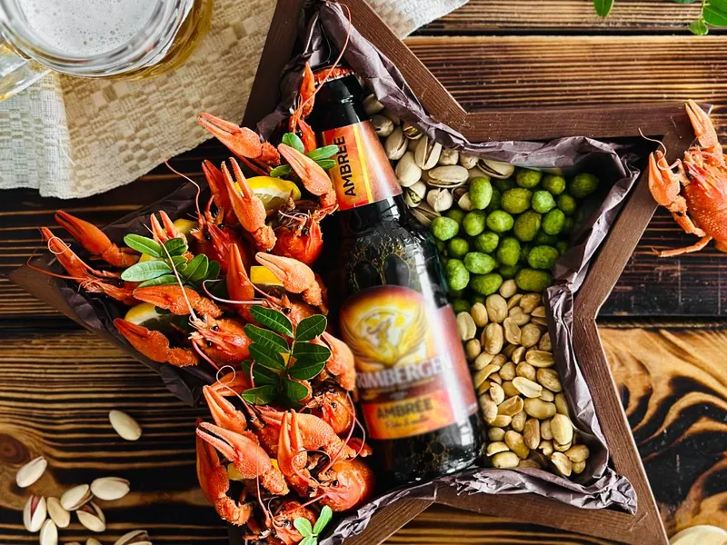

Съедобные подарочные композиции
Деревянный бокс “Звезда” с раками 10шт S + бутылка + орехи
Цена и наличие
- 1 шт.167 BYN / шт.В наличии
Данные на 23.11.2026.
Характеристики
- Вид подарка
- деревянный бокс "Звезда"
Описание
Наши съедобные подарочные композиции – это идеальное сочетание вкуса и эстетики! В нашем ассортименте вы найдете стильные и аппетитные наборы, созданные для любых праздников: 14 февраля, 23 февраля, 8 марта, день рождения, юбилеи и другие особые события.
Деревянный бокс в форме звезды — эффектный съедобный подарок для мужчины, в котором сочетаются вареные раки, орехи и бутылка напитка. В набор входит 10 раков размера S, поэтому композиция выглядит ярко и при этом остается удобным форматом для небольшого праздничного подарка. Такой бокс можно подарить мужу, парню, другу, коллеге, брату или начальнику. Особенно хорошо он подойдет на 23 февраля, день рождения, юбилей, профессиональный праздник или как необычный подарок без повода. Форма звезды делает набор более праздничным и заметным, а сочетание раков и орехов превращает его не просто в красивую композицию, а в полноценный гастрономический подарок. Это интересная альтернатива стандартным подарочным наборам, сладостям и сувенирам. Если вы ищете оригинальный подарок мужчине в Минске, деревянный бокс «Звезда» с раками станет необычным вариантом для тех, кто ценит вкусные и нестандартные подарки. Возможна доставка по Минску и Беларуси.
ОСНОВНОЕ
Упаковка в прозрачной пленке (слюде) Наполнение 10 раков размера S; бутылка; орехи; зелень; декоративная бумага; деревянная коробка